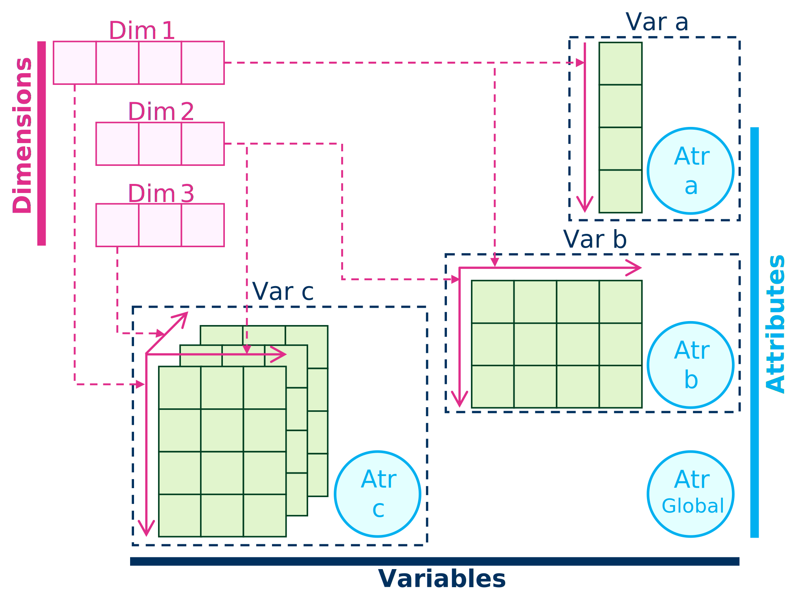

library(ncdf4)
library(tidyverse)
# Define the NetCDF file path
fn_NetCDF <- "C:\\Lei\\HS_Web\\data_share\\minibeispiel_NetCDF.nc"NetCDF
NetCDF stands for “Network Common Data Form.” It is a file format that is designed to store large arrays of data, primarily used in scientific and engineering applications. NetCDF files are self-describing, meaning they contain metadata along with the data, which makes it easier to understand the contents. NetCDF is particularly well-suited for storing multi-dimensional data, such as time series, spatial data, and climate model outputs. It can handle data with complex structures like grids, which are common in environmental and geospatial datasets.
In simple terms, NetCDF is a file format for storing multi-dimensional arrays of data along with metadata.
More Details in unidata.
NetCDF files have a hierarchical structure, consisting of dimensions, variables, and attributes. Dimensions define the size of arrays, variables hold the data, and attributes provide additional information about the data.

With these three components, you can efficiently handle the import, creation, and export of data in the NetCDF format.
1 Library
The ncdf4 R package is a powerful tool for working with NetCDF data in R, allowing you to read, write, and manipulate datasets in this format with ease and efficiency.
The netCDF4 Python Library is a powerful tool for working with NetCDF data in R, allowing you to read, write, and manipulate datasets in this format with ease and efficiency.
import netCDF4 as nc
import numpy as np
# Define the NetCDF file path
fn_NetCDF = "C:\\Lei\\HS_Web\\data_share\\minibeispiel_NetCDF.nc"The Test data minibeispiel_NetCDF.nc is avable from Github data_share, but it can not be direcly read from Git hub so you need download to local.
2 Import
2.1 Open
The first step in working with NetCDF files is to open the file using the nc_open() function. However, it’s important to note that opening the file doesn’t directly load its contents into the R environment. Instead, it establishes a connection between the file and the R session and effectively locks the file for reading or writing operations.
# Open the NetCDF file
nc_Test <- nc_open(fn_NetCDF)# Open the NetCDF file
nc_Test = nc.Dataset(fn_NetCDF, "r")2.2 Basic Information
After opening a NetCDF file in R, you can access the basic information about the dataset, which is contained in a list. This information typically includes details about three components: dimensions, variables, and attributes of the NetCDF file.
# Access the dimensions
# nc_Test$dim
nc_Test$dim |> names()[1] "latitude" "longitude" "time" # Access the variables
# nc_Test$var
nc_Test$var |> names()[1] "T0" "crs"nc_Test$var$T0$size[1] 6 8 3# Access attributes
ncatt_get(nc_Test, 0)$title
[1] "Multidimensional data example"
$author
[1] "Kan, Lei, kan.lei@ruhr-uni-bochum.de"# Access the dimensions
print(nc_Test.dimensions){'latitude': <class 'netCDF4._netCDF4.Dimension'>: name = 'latitude', size = 6, 'longitude': <class 'netCDF4._netCDF4.Dimension'>: name = 'longitude', size = 8, 'time': <class 'netCDF4._netCDF4.Dimension'> (unlimited): name = 'time', size = 3}# Access the variables
print(nc_Test.variables){'latitude': <class 'netCDF4._netCDF4.Variable'>
float64 latitude(latitude)
units: degrees_north
long_name: latitude
unlimited dimensions:
current shape = (6,)
filling on, default _FillValue of 9.969209968386869e+36 used, 'longitude': <class 'netCDF4._netCDF4.Variable'>
float64 longitude(longitude)
units: degrees_east
long_name: longitude
unlimited dimensions:
current shape = (8,)
filling on, default _FillValue of 9.969209968386869e+36 used, 'time': <class 'netCDF4._netCDF4.Variable'>
int32 time(time)
units: day since 1961-01-01 00:00:00 +00
long_name: time
unlimited dimensions: time
current shape = (3,)
filling on, default _FillValue of -2147483647 used, 'T0': <class 'netCDF4._netCDF4.Variable'>
float32 T0(time, longitude, latitude)
units: cel
_FillValue: -9999.0
unlimited dimensions: time
current shape = (3, 8, 6)
filling on, 'crs': <class 'netCDF4._netCDF4.Variable'>
float32 crs()
long_name: coordinate reference system
EPSG: EPSG:4236
unlimited dimensions:
current shape = ()
filling on, default _FillValue of 9.969209968386869e+36 used}# Get the size of the "T0" variable
print(nc_Test.variables["T0"].size)144# Access attributes associated with the NetCDF file
print(nc_Test.__dict__){'title': 'Multidimensional data example', 'author': 'Kan, Lei, kan.lei@ruhr-uni-bochum.de'}2.3 Values and Attributes
With the basic information about variables obtained, you can access the values and attributes of each variable as needed. You can also obtain specific subsets of variables using start points and counts for each dimension.
Additionally, dimensions are treated as variables in the NetCDF structure, making it easier to work with them.
ncvar_get()start: The starting point of every dimension to load variable valuescount: The length of every dimension to read
ncatt_get()
# Retrieve the variable "T0" WHOLE
ncvar_get(nc_Test, "T0"), , 1
[,1] [,2] [,3] [,4] [,5] [,6] [,7]
[1,] 0.725443244 0.6732702 0.5703731 0.5483580 0.2537033 0.94056231 0.7548797
[2,] 0.814703703 0.5736017 0.1296277 0.4551281 0.1588579 0.71151888 0.6034713
[3,] 0.216821894 0.5321406 0.4085952 0.3278248 0.5430235 0.82378107 0.6014815
[4,] 0.297041595 0.7512726 0.9008501 0.5378256 0.3988290 0.97841108 0.3478752
[5,] 0.618472338 0.3600799 0.6185356 0.5353751 0.1055002 0.01782655 0.4251221
[6,] 0.002724555 0.3111249 0.1833881 0.1643889 0.9843024 0.71265191 0.9824668
[,8]
[1,] 0.89867812
[2,] 0.83212894
[3,] 0.85922885
[4,] 0.62324673
[5,] 0.06894559
[6,] 0.93136758
, , 2
[,1] [,2] [,3] [,4] [,5] [,6] [,7]
[1,] 0.59483874 0.13798767 0.4353234 0.84987003 0.4080514 0.37254110 0.8453325
[2,] 0.02716501 0.13771591 0.4015263 0.81022775 0.2442435 0.06005965 0.6033576
[3,] 0.63030612 0.07624923 0.8082347 0.09031754 0.1274646 0.99918461 0.3695562
[4,] 0.17796901 0.58655804 0.9450504 0.45794815 0.3458956 0.50446874 0.7934223
[5,] 0.90312028 0.64233494 0.6922982 0.93077385 0.3621833 0.98565292 0.2701277
[6,] 0.12467533 0.98434967 0.7130268 0.02969582 0.8022981 0.14341900 0.7787448
[,8]
[1,] 0.92375302
[2,] 0.78221768
[3,] 0.77616996
[4,] 0.53530270
[5,] 0.06008475
[6,] 0.07561103
, , 3
[,1] [,2] [,3] [,4] [,5] [,6] [,7]
[1,] 0.6394395 0.2947552 0.22762527 0.2802765 0.4507208 0.4534548 0.9134229
[2,] 0.8064501 0.9236657 0.26099709 0.6815231 0.8750964 0.4788742 0.6474289
[3,] 0.8841326 0.6565964 0.41490734 0.5396990 0.3399962 0.2538978 0.9127330
[4,] 0.9628072 0.2631489 0.93086725 0.9477316 0.1059119 0.6934257 0.6424375
[5,] 0.3258024 0.2492901 0.87350070 0.1397025 0.7364389 0.1140606 0.5135770
[6,] 0.8484380 0.6546680 0.02836124 0.1543205 0.8428516 0.7323521 0.2617310
[,8]
[1,] 0.1782982
[2,] 0.1185690
[3,] 0.6765702
[4,] 0.7235187
[5,] 0.1176458
[6,] 0.4182399# Retrieve a subset of the variable "T0"
# This subset starts at position (1, 1, 1) and has a count of (2, 3, 1) along each dimension
ncvar_get(nc_Test, "T0", start = c(1, 1, 1), count = c(2, 3, 1)) [,1] [,2] [,3]
[1,] 0.7254432 0.6732702 0.5703731
[2,] 0.8147037 0.5736017 0.1296277# Retrieve attributes associated with the variable "T0"
ncatt_get(nc_Test, "T0")$units
[1] "cel"
$`_FillValue`
[1] -9999nc.variables["var_Name"]nc.variables["var_Name"].__dict__
# Retrieve the entire "T0" variable
t0_variable = nc_Test.variables["T0"][:]
print("T0 variable (whole):", t0_variable)T0 variable (whole): [[[0.72544324 0.8147037 0.2168219 0.2970416 0.61847234 0.00272455]
[0.67327017 0.57360166 0.5321406 0.75127256 0.36007988 0.31112486]
[0.5703731 0.12962769 0.40859517 0.90085006 0.6185356 0.18338805]
[0.548358 0.45512813 0.3278248 0.5378256 0.5353751 0.16438887]
[0.25370327 0.15885793 0.54302347 0.39882904 0.10550024 0.9843024 ]
[0.9405623 0.7115189 0.8237811 0.9784111 0.01782655 0.7126519 ]
[0.75487965 0.60347134 0.6014815 0.34787518 0.4251221 0.9824668 ]
[0.8986781 0.83212894 0.85922885 0.6232467 0.06894559 0.9313676 ]]
[[0.59483874 0.02716501 0.6303061 0.17796901 0.9031203 0.12467533]
[0.13798767 0.1377159 0.07624923 0.58655804 0.64233494 0.98434967]
[0.43532342 0.40152633 0.8082347 0.9450504 0.69229823 0.71302676]
[0.84987 0.81022775 0.09031754 0.45794815 0.93077385 0.02969582]
[0.40805143 0.24424349 0.12746462 0.34589556 0.36218333 0.8022981 ]
[0.3725411 0.06005965 0.9991846 0.50446874 0.9856529 0.143419 ]
[0.8453325 0.60335755 0.36955625 0.79342234 0.2701277 0.7787448 ]
[0.923753 0.7822177 0.77616996 0.5353027 0.06008475 0.07561103]]
[[0.6394395 0.80645007 0.8841326 0.96280724 0.3258024 0.84843796]
[0.2947552 0.9236657 0.6565964 0.26314893 0.24929011 0.65466803]
[0.22762527 0.2609971 0.41490734 0.93086725 0.8735007 0.02836124]
[0.28027648 0.6815231 0.539699 0.94773155 0.1397025 0.1543205 ]
[0.4507208 0.87509644 0.33999622 0.10591187 0.7364389 0.84285164]
[0.4534548 0.47887424 0.25389776 0.69342566 0.11406064 0.73235214]
[0.9134229 0.64742893 0.91273296 0.64243746 0.513577 0.26173097]
[0.17829823 0.11856905 0.67657024 0.7235187 0.11764584 0.41823992]]]# Retrieve a subset of the "T0" variable
# This subset starts at position (0, 0, 0) and has a count of (2, 3, 1) along each dimension
print(t0_variable[0:2, 0:3, 0:1])[[[0.72544324]
[0.67327017]
[0.5703731 ]]
[[0.59483874]
[0.13798767]
[0.43532342]]]# Access attributes associated with the "T0" variable
print(nc_Test.variables["T0"].__dict__){'units': 'cel', '_FillValue': -9999.0}2.4 Close
When working with NetCDF files in R using the ncdf4 package, it’s crucial to remember that opening a file establishes a connection. This prevents data corruption and conflicts. To finish, always close the file using nc_close() once you’ve completed your operations.
# Close the NetCDF file
nc_close(nc_Test)# Close the NetCDF file
nc_Test.close()3 Create and Export
In this section, we will walk you through the steps to create a NetCDF file with your data. By following these steps, you’ll be able to prepare your data and save it in the NetCDF format for further analysis or sharing.
3.1 Create new empty NetCDF file (Python)
In R, you need after defining the dimensions and variables to create the file in the system. See Section 3.4.
In Python, you first need to create (connect) a new empty file in the system and an object in Python.
# Create a NetCDF file
nc_Create = nc.Dataset("C:\\Lei\\HS_Web\\data_share\\minibeispiel_NetCDF_Py.nc", "w")3.2 Define the Dimensions
The initial step in creating a NetCDF dataset is dimension definition:
ncdim_def()
# Define dimension metadata
num_Dim_Lon <- seq(11.72, 11.79, 0.01)
num_Dim_Lat <- seq(50.08, 50.13, 0.01)
num_Dim_Time <- 1:3
dim_lon <- ncdim_def("longitude", "degrees_east",
num_Dim_Lon,
longname = "longitude")
dim_lat <- ncdim_def("latitude", "degrees_north",
num_Dim_Lat,
longname = "latitude")
dim_time <- ncdim_def("time", "day since 1961-01-01 00:00:00 +00",
num_Dim_Time, unlim=TRUE,
longname = "time")nc.createDimension()
# Define dimension metadata
num_Dim_Lon = np.arange(11.72, 11.8, 0.01)
num_Dim_Lat = np.arange(50.08, 50.14, 0.01)
num_Dim_Time = np.arange(1, 4)
# Define dimensions
nc_Create.createDimension("longitude", len(num_Dim_Lon))<class 'netCDF4._netCDF4.Dimension'>: name = 'longitude', size = 9nc_Create.createDimension("latitude", len(num_Dim_Lat))<class 'netCDF4._netCDF4.Dimension'>: name = 'latitude', size = 7nc_Create.createDimension("time", len(num_Dim_Time)) # Use None for unlimited dimension<class 'netCDF4._netCDF4.Dimension'>: name = 'time', size = 3
dim_lon = nc_Create.createVariable("longitude", "f4", "longitude")
dim_lat = nc_Create.createVariable("latitude", "f4", "latitude")
dim_time = nc_Create.createVariable("time", "i", "time")
dim_lon[:] = num_Dim_Lon
dim_lat[:] = num_Dim_Lat
dim_time[:] = num_Dim_TimeCompared to R, in Python, you need to create a variable with the same name to store the values of the dimension. In Python, a pure dimension will only consider the dimension’s size and name.
In this example, we will create a 3D array with latitude, longitude, and time dimensions.
3.3 Define the Variales
The next step is to define a variable, but you don’t need to assign values to it at this stage. There are three common attributes (name, units and dimensions) that are essential for every variable and should always be defined. Other user-defined attributes can be added later as needed.
ncvar_def()nameunitsdim
You also have the option to create a dimension with no data values, effectively making it a null dimension. However, you can still set attributes for this dimension to store non-array information.
After defining all the variables, it’s necessary to gather them into a list.
# Define a variable named "T0" with the units "cel" and dimensions dim_lat, dim_lon, and dim_time.
# The missing value for this variable is set to -9999.
var_T0 <- ncvar_def("T0", "cel", list(dim_lat, dim_lon, dim_time), -9999)
# Define a variable named "crs" with no units and no dimensions (empty list).
# This variable is defined as NULL initially.
var_crs <- ncvar_def("crs", "", list(), NULL)
# Combine variables into a list
vars <- list(var_T0, var_crs)nc.createVariable()nameunitsdim
# Define variables
var_T0 = nc_Create.createVariable("T0", "f4", ("latitude", "longitude", "time"))
var_T0.units = "cel"
var_T0.missing_value = -9999
var_crs = nc_Create.createVariable("crs", "S1") # Create an empty variable3.4 Create new empty NetCDF file (R)
You can now create a NetCDF file with the (list of) variables you have:
nc_create(filename, vars)
nc_Create <- nc_create("C:\\Lei\\HS_Web\\data_share\\minibeispiel_NetCDF.nc", vars)3.5 Put the Data
After creating the NetCDF file, it will be an empty file in your local folder. The next step is to populate the file with data for each of the variables. This involves specifying the values for each variable and writing them to the file.
ncvar_put()
ncvar_put(nc_Create, var_T0, runif(length(num_Dim_Lat) * length(num_Dim_Lon) * length(num_Dim_Time)))# Add data to the "T0" variable (random data)
var_T0[:] = np.random.rand(len(num_Dim_Lat), len(num_Dim_Lon), len(num_Dim_Time))3.6 Put Attributes
When populating a NetCDF file, it’s essential to not only specify the variable data values but also the attributes associated with those variables. Attributes provide crucial metadata that describes the data, such as units, long names, and other relevant information.
ncatt_put()
Absolutely, you can set attributes not only for individual variables.
# Add the "long_name" and "EPSG" attributes to the variable "var_crs"
ncatt_put(nc_Create, var_crs, "long_name", "coordinate reference system")
ncatt_put(nc_Create, var_crs, "EPSG", "EPSG:4236")var_crs.long_name = "coordinate reference system"
var_crs.EPSG = "EPSG:4236"But also for the entire NetCDF file as global attributes. Global attributes provide overarching information about the dataset, such as its title, source, creation date, and any other relevant details.
# Add the "title" and "author" global attributes to the NetCDF file
ncatt_put(nc_Create, 0, "title", "Multidimensional data example")
ncatt_put(nc_Create, 0, "author", "Kan, Lei, kan.lei@ruhr-uni-bochum.de")# Add global attributes
nc_Create.title = "Multidimensional data example"
nc_Create.author = "Kan, Lei, kan.lei@ruhr-uni-bochum.de"3.7 Close
At the end, make sure to close the connections to your NetCDF files.
nc_close(nc_Create)# Close the NetCDF file
nc_Create.close()Once you’ve gone through these steps, you’ll have a well-maintained NetCDF file that can be easily used for any further processing, transformations, or visualization.